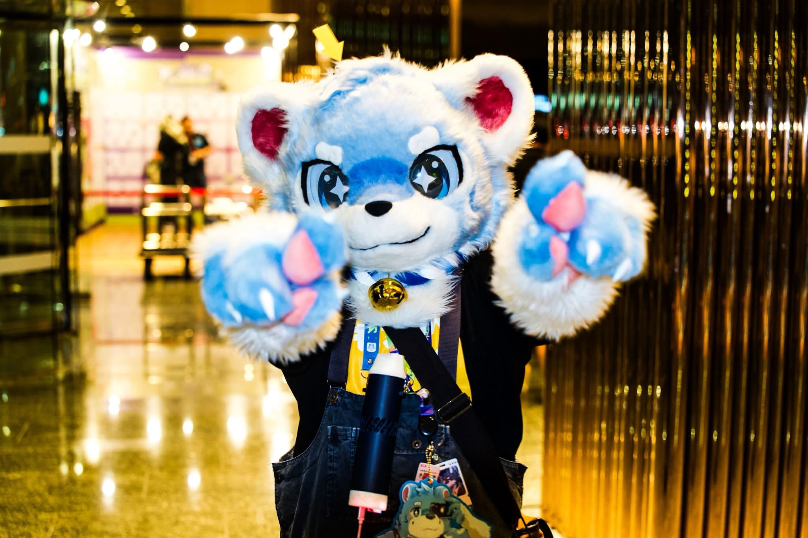

01
01 / Fursuit Characters
雷諾奇 ✕ 雲青
情緒價值滿滿的柴犬「雷諾奇」與藍色海洋小熊「雲青」專屬天地！包含角色設定介紹、社群傳送門與精選寫真。
進入毛毛專區

02
02 / Shiba ✕ Punk Photo Studio
柴龐攝影工作室
「不被定義，只留下影像。」
用相機記錄活動中的每一個精彩瞬間，用人像攝影留住每個人獨一無二的印象。不追求完美，因為最真實的影像往往來自最不刻意的瞬間。
進入柴龐作品集與委託簡報